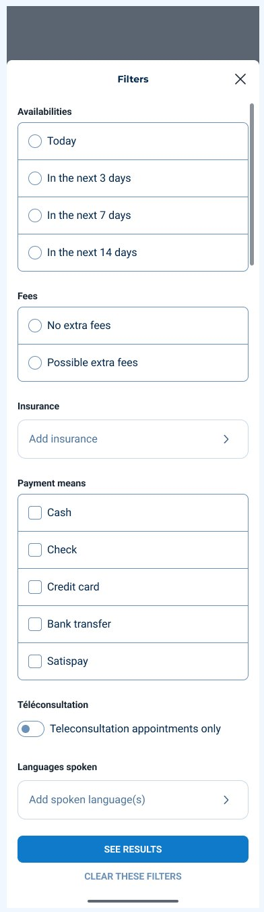

Before


Vision

Doctolib — Q2 2022 — Desktop, mobile web & app — France & Germany
07 — FiltersI made filters visible in search results, validated the change with data, user tests and an A/B test, then designed how the whole filter system should grow.
On Doctolib, patients search by specialty and city, then pick a practitioner from a long list. Filters (availability, fees, visit reason, language…) were among the most requested improvements in patient feedback. They existed, but behind a single floating “Filter” button at the bottom of the results.
Only 10% of mobile searches in France and 14% in Germany used a filter when one was available. Before redesigning anything, the team needed to know which filters mattered, for whom, and whether better filters could actually help patients book.
We worked with the data team on a deep-dive into one week of mobile searches in France and Germany. Three findings shaped the design.
GPs (18%), paediatricians (16%) and ENTs (12%) led the way, mostly through the availability filter: these are urgent needs. Psychiatrists relied on fees and visit reason.
Filter usage rose from 3.6% to 15% as the number of results grew. With a median of 77 results in France versus 18 in Italy, impact would be strongest in mature markets.
Patients who used filters booked more often. That's a correlation, not proof, but it was enough to make filters a priority on the roadmap.
I ran moderated usability tests on the mobile app with four patients, two of whom had a visual impairment. They had two missions: modify a visible filter, then find a hidden one (a Spanish-speaking dentist).
“The experience is very intuitive, especially the second time: it's fast and efficient.”
Test participant
“It reminds me of food delivery apps like Uber Eats.”
Test participant
The new filter bar ran for two weeks on 100% of mobile traffic in France and Germany. Filter usage rose sharply and significantly, across almost every filter type.
| Filter | France | Germany |
|---|---|---|
| Any filter | +55% | +44% |
| Availability | +47% | +54% |
| Visit reason | +46% | +7% |
| Language | +44% | +25% |
| Insurance | — | +44% |
Booking conversion stayed flat. Patients filtered more without booking less, so the new version was rolled out: it gave patients more control at no cost, and laid the groundwork for everything that followed.
The filter bar worked, and its success raised new questions:
The panel had grown into a long form mixing radio buttons, checkboxes and toggles. Adding filters would only make it longer. I designed a structure that can scale.
The new panel lists filter categories, grouped by topic (availability, price & insurance, other). Each opens a sub-level that uses the component best suited to its content: a calendar for dates, a search field for insurers, checkboxes for multiple choices. The main level always shows what's selected.

Ratings were being introduced in Italy, so we needed a way to filter by them. I started with a benchmark of how other apps handle it: radio vs. checkbox vs. chip, default selection, granularity, and whether rating should be a filter or a sort.


The same pattern made it easy to add filters that answer specific patient needs.
Card, cash, cheque, plus country-specific options such as bank transfer and Satispay in Italy.
Desktop represents about 20% of traffic and shares the same logic. Two small changes made selected filters clearer: